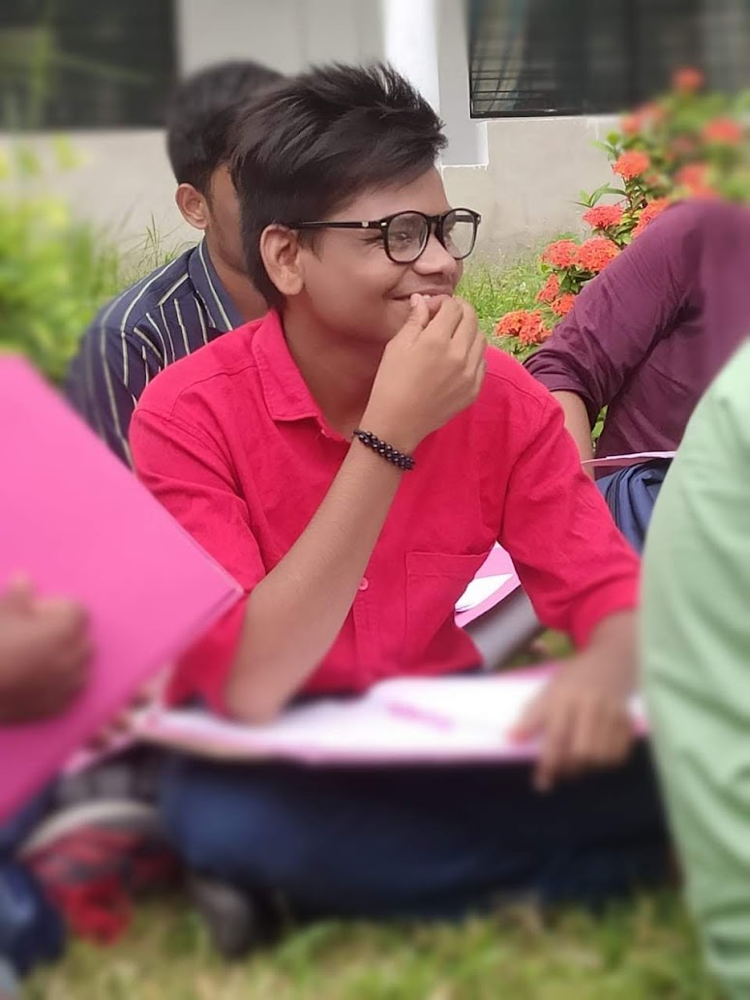

My Life Summary

0-5 years
Emotional development
- Soothed by touches and voices of parents.Able to self-soothe when upset.Is alert for periods of time
- Responds to parents' comforting when upset.Becomes alert upon hearing pleasant sounds.
- Able to briefly calm self by sucking on hands.Smiles when happy.
- Smiles in response to events.Begins to imitate facial expressions.Able to soothe self.Becomes excited when approached by caregivers.
- Recognizes familiar faces and responds happily to them. Startles at loud noises and may cry out of fear.Expresses happiness, pleasure, sadness, and anger.Responds to the emotions of others.Often seems to be happy.Likes to look at self in mirrors.
Communication skills
- Turns head towards sounds and voices.Cries to communicate needs and stops crying when needs have been met.
- Startles at loud noises.Able to make noises besides crying
- Able to coo and make gurgling noises.Able to turn head towards noises.Begins to smile when interacted with.Pays attention to speaking people.[24]
- Able to smile, laugh, squeal, and blow bubbles. Coos in response to parents' coos.Turns towards voices.
Cognitive skills
- Follows faces when quiet and alert.Stares at bright objects placed in front of the face for a short period of time.
- Stares at objects, particularly brightly colored ones, when placed in front of face.Able to follow faces.
- Pays attention to faces.Follows objects with eyes.Capable of recognizing people from a distance.Starts becoming fussy when activity does not change.
- Begins to easily get distracted by surroundings.Begins to predict and anticipate routines.Repeats behaviors that result in a desired effect.
6-10 years
memories with parents
- Children may go on picnics with their parents to places like the zoo.
- Children may help their parents with chores, such as helping their grandmother make pickles.
- Children may play games with their parents, such as cricket, football, or other sports.
memories in school
- Some children remember feeling welcomed when they first started school.
- Children may remember making friends and sharing lunch with them.
- Anything that involves practicing fine motor skills like drawing and painting and gross motor skills like running and jumping are great.
devoloping skills
- Social interactions are also great.
- Children may go on picnics with their parents to places like the zoo
- Building with LEGO, K'Nex, or other construction toys.
- Challenge them to create specific structures or vehicles.
11-15 years
studies
- Entering kindergarten or 1st grade at a younger age than the typical starting age of 5-6 years old.
- Skipping a grade level at some point during your early schooling.
- Having a birthday that falls close to the school enrollment cutoff date, allowing you to start school slightly earlier than your peers.
extra curicular activities
- Sports: Sports can help kids learn to work together as part of a team.
- Music: Learning an instrument can help kids learn about hard work and dedication.
- Chess: Chess can help kids learn strategy skills and think ahead.
Ending school life
- The end of school life can be a time of reflection and celebration of what was learned and experienced.
- Here are some thoughts on the end of school life:
- It can be difficult to say goodbye to everyone, including friends and teachers.
16-21 years
intermediate life
- College life is full of new experiences, including new friends, classes, activities, and living arrangements.
- It can be exciting, but it can also be challenging to balance academics, social life, and extracurriculars
- Manage your time: Set study hours and goals, and stick to them.
B.Tech life
- Life during a BTech (Bachelor of Technology) program can be quite demanding and multifaceted.
- Balancing academics, extracurriculars, and personal life can be challenging.
- Students need to develop strong time management and organizational skills to stay on top of their responsibilities.
tours,projects,exams,movies,games
- Plan adventure trips with your friends , but u will never go .
- College tours, also known as campus tours, allow visitors to learn about a college or university's campus, facilities, and student life
- Try to plan your schedule ahead of time so that way you know exactly what to do. Focus on completing the most important or most difficult tasks
creating meroies with friends
- Life is better with friends by your side. Cherish the moments that turn into memories with the ones who make your heart smile.
- A time to find yourself as you try to manage the bridge between youth and adulthood.